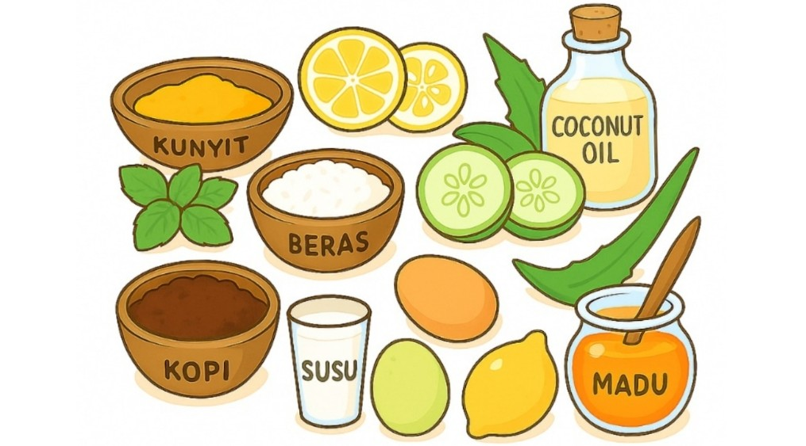

SkinSantara
Jenis Bahan Alami

Bahan-bahan Populer dalam Skincare Tradisional
- Lidah Buaya: Melembapkan dan menenangkan kulit iritasi, mengandung antioksidan serta mempercepat penyembuhan luka kecil.
- Bengkoang: Mencerahkan kulit, mengandung vitamin C dan B1 yang membantu menyegarkan wajah dan meratakan warna kulit.
- Kunyit: Anti-inflamasi dan antioksidan, membantu meredakan jerawat serta memperbaiki tekstur kulit.
- Madu: Antibakteri dan melembapkan, cocok untuk kulit kering dan sensitif, serta membantu proses regenerasi kulit.
- Jeruk Nipis: Mengontrol minyak dan membersihkan pori, membantu mencegah jerawat karena kandungan vitamin C yang tinggi.
- Beras: Mengandung ferulic acid dan allantoin alami yang membantu mencerahkan kulit, menghaluskan tekstur, serta mengurangi noda hitam.
- Kopi: Mengandung kafein dan antioksidan yang mampu mengencangkan kulit, mengecilkan pori, serta mengangkat sel kulit mati.
- Minyak Kelapa: Melembapkan secara intensif, bersifat anti-bakteri dan anti-jamur, ideal untuk kulit kering dan iritasi ringan.
- Timun: Menyegarkan dan menghidrasi kulit, mengandung silika yang membantu memperkuat jaringan kulit dan mengurangi pembengkakan.
- Teh Hijau: Kaya antioksidan, membantu melawan radikal bebas, meredakan peradangan dan cocok untuk kulit berjerawat.
- Susu: Mengandung asam laktat yang dapat membantu eksfoliasi lembut, mencerahkan kulit, dan menjaga kelembapan alami.
- Putih Telur: Mengencangkan kulit dan mengecilkan pori-pori, ideal digunakan sebagai masker wajah untuk kulit berminyak.